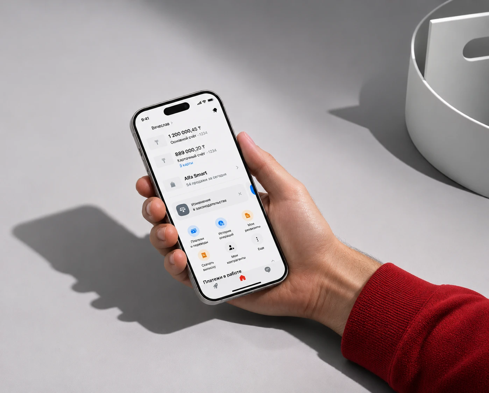
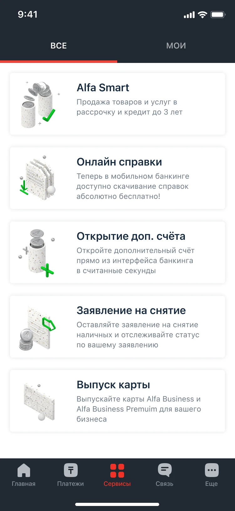

Редизайн мобильного банка
для бизнеса
Вместе с командой выяснил, почему предприниматели не справляются с базовыми задачами в приложении, и переделал ключевые сценарии и навигацию под их реальное поведение.
- Компания

- Роль
- Product Designer
- Период
- Q3 2021 – весна 2022
- Продукт
- Мобильный банк

Коротко
- Задача
- Приложение для бизнеса устарело: SUS ключевых сценариев — 54 при норме 70, 12 773 обращения в колл-центр по приложению (октябрь 2021).
- Что сделал
- Вёл дизайн в рабочей группе: аудит, замеры SUS и SUM, персоны, новая информационная архитектура, ключевые флоу и тексты, UX-тест прототипа на 8 клиентах.
- Результат
- Проверенный прототип и gap list из 90+ пунктов UX-долга. В релиз не вышел: весной 2022 Альфа-Банк Казахстан закрылся.
Контекст
Проблема
Приложение для бизнеса (АБМ) устарело: старая дизайн-система, немасштабируемые экраны, устаревшие user flow. NPS и VoC росли медленно, а клиенты часто обращались в колл-центр с вопросами по приложению.
54%
SUS ключевых сценариев при норме 70%
65%
SUM ключевых сценариев при норме 68%
Цель
Бизнесу нужно было увеличить долю рынка и лояльность клиентов за счёт удобства приложения. В бизнес-кейс редизайна заложили измеримые цели:
на 35%
меньше обращений в колл-центр по приложению в месяц
Time to market
быстрее за счёт готовой дизайн-системы Альфа-Банка России
−31,1%
болей клиентов из VoC
−28,5%
причин не рекомендовать банк из NPS
А также поднять SUS и SUM ключевых сценариев до нормы.
Моя роль
Вёл дизайн в рабочей группе редизайна: вместе с исследователем прорабатывал гипотезы и проводил аудит, участвовал в CustDev и замерах SUS и SUM, проектировал новую архитектуру и экраны, собирал прототипы для тестов.
Также адаптировал дизайн-систему Альфа-Банка России под наше приложение, добавлял недостающие компоненты и обучал коллег работать с ней.
Как было: приложение до редизайна


Так выглядело приложение до редизайна: главная и раздел «Сервисы»
Процесс
Как шёл проект
-
Q3–Q4 2021
UX-аудит и discovery
Дизайн-аудит, разбор обращений в колл-центр, отчёты VoC, NPS, Markswebb и Google Analytics, замер SUS и SUM
-
Q4 2021
Проектирование
Google Design Sprint, воркшоп с Red Mad Robot, гайды и паттерны, 20 воркшопов рабочей группы, UX-тесты
-
Q1 2022
Презентация и kick-off
Демо стейкхолдерам и разработке, оценка и планирование
-
Q1–Q3 2022 (план)
Передача в разработку
План: детализация макетов, оценка, планирование и старт реализации. Не реализован — банк закрылся весной 2022
Исследование
Исследование шло в несколько этапов, и у каждого была своя команда и срок:
| Этап | Срок | Команда |
|---|---|---|
| Дизайн-аудит IA и текущего дизайна | 2 недели | 5 дизайнеров |
| Персоны пользователей с usabilitylab.ru | 2 месяца | коуч, исследователь, 2 менеджера КЦ |
| Карта сценариев и оценка критичности | 1 неделя | 2 дизайнера |
| Замер SUS и SUM старого приложения | 3 недели | 2 исследователя, рекрутинговое агентство |
| Redesign-sprint: конкуренты, USM, CJM, прототип | 10 дней | 12 дизайнеров |
| Дизайн-критика с Red Mad Robot | 3 дня | 18 дизайнеров |
| UX-тесты первого прототипа | 1 неделя | исследователь |
Пользователи
За 2 месяца вместе с usabilitylab.ru построили карту персон. Ключевой стала одна:
Работяга 24/7 — ключевая персона
Чтобы всё было сделано хорошо — сделай это сам
- выставляет счета и формирует платежи
- ищет контрагентов и работает с ними
- управляет сотрудниками
- контролирует расходы и прибыль
Второстепенные персоны:
Бухгалтер
Волк-одиночка
Важный босс
Вывод для продукта: бухгалтер работает в вебе, поэтому приложение проектируем и упрощаем под предпринимателя.
Сценарии
В приложении нашлось более 100 сценариев для 16 видов работ. Из них выделили 14 ключевых и приоритизировали по RICE и критичности для ключевой персоны и банка.
Удобство частых сценариев в старом приложении
SUS и SUM: зелёный — норма и выше, красный — ниже нормы. Время — чем короче, тем лучше
- Получение реквизитов счёта критичный4840%3 мин
- Конвертация критичный4310%6 мин
- Платёж в тенге критичный5270%3 мин
- Сохранение выписки критичный5040%3 мин
- Открытие карты критичный5590%1,5 мин
- Подключение AlfaSmart критичный8675%3 мин
- Отправка деталей платежа5380%59 с
- Создание шаблона3910%5 мин
- Поиск шаблона5890%12 с
- Заявка на снятие наличных59100%1,5 мин
- Запрос и отправка справки5475%55 с
- Выход из приложения58100%15 с
норма: SUS — 70, SUM — 68%
NPS по каждому сценарию — в подсказке при наведении


Что мешало пользователям
Замеры и тесты показали три группы критических проблем — из-за них клиенты не могли выполнить задачу и ставили низкие оценки:
Навигация
Тексты
Понимание процесса
Проектирование и проверка
На 10-дневном redesign-sprint с 12 дизайнерами разобрали конкурентов, построили USM и CJM и собрали первый прототип. Его разобрали на дизайн-критике с Red Mad Robot, а затем проверили UX-тестом.
Дальше работали итерациями: проектировали, проверяли UX-тестом на задачах из критических сценариев и дорабатывали, пока результаты не улучшались. Тесты проводили в оборудованной лаборатории. Методы:
- решенческое интервью
- качественный модерируемый тест
- тест 5 секунд
- тест ожидания
- тест первого клика
Решение
Принципы нового приложения
Сформулировали принципы, на которые опирается новое приложение:
- Ясность важнее минимализма, эффективность важнее красоты
- До нужной функции — 1–3 перехода
- Сначала важное для пользователя, упор на ключевую персону
- Текст — это 50% интерфейса, но если понятно без текста, он не нужен
- Максимум автозаполнения и консистентность с веб-банкингом
- Приложение подсказывает частые и подходящие по контексту действия
Новая информационная архитектура
Основная идея — разгрузить архитектуру приложения и вывести основные функции и сервисы на расстояние 1–3 кликов. В первую очередь разделили приложение на три раздела, каждый под свою задачу предпринимателя.
1. Мой бизнес
Я как предприниматель управляю денежными потоками и слежу за ними, отслеживаю события и KPI своего бизнеса. Оперативно реагирую на изменения и принимаю решения.

2. Развитие бизнеса
Я как предприниматель получаю релевантные рекомендации по развитию, полезные бизнес-сводки и советы, вовремя узнаю об изменениях в законодательстве.

3. Чат с банком
Я как предприниматель мгновенно получаю ответы на вопросы и помощь, когда она нужна. Слежу за статусами заявок, обращений и заказов.
Чтобы клиенту не приходилось звонить в банк, сделали отдельный раздел чата и быстрое обращение в колл-центр, а в критических сценариях добавили подсказки.

Action Bar
В старом приложении реквизиты клиенты искали в «Личном кабинете» в разделе «Ещё», а выписку по отдельному счёту не могли выгрузить. Для быстрого доступа к основным сценариям, которые мы выявили на CustDev, сделали гибкий Action Bar на главном экране: «Платежи и переводы», «История операций», «Мои реквизиты», «Скачать выписку» и другие частые действия.

По кнопке «Ещё» открывается окно с менее частыми функциями — по статистике использования. Его можно настроить под себя и вывести нужные действия на главный экран.

Ключевые флоу
Главные сценарии ключевой персоны — от входа в приложение до подписи платежей.
До авторизации
Открыть ИП можно прямо из приложения по номеру телефона и ИИН, а задать вопрос банку — в чате ещё до входа.

Платёж в тенге
Все платежи и переводы собраны в одном разделе, а частые — в «Избранных». Получателя можно выбрать из контрагентов или ввести вручную.

Платежи в работе и подпись
Платежи разложены по статусам: на подпись, в обработке, к зачислению — со счётчиками. Можно выбрать несколько и подписать пачкой, а не по одному.

Компании и выход
Переключение между компаниями, настройки и выход собраны в шторке «Мои компании» — именно там пользователи искали выход на тесте прототипа.

Тексты интерфейса
В старом приложении нашли 50+ проблем с текстами. Пересмотрели tone of voice:
Было
- нет конкретной пользы
- обезличенный текст, голос робота
- ставим перед фактом, не решаем проблему
Стало
- пишем полезно и понятно
- уважаем пользователя
- объясняем проблему и предлагаем решение
Банковские термины заменили понятными словами. Например, респонденты не понимали «Конвертацию» и искали «Перевод», поэтому в новом дизайне вместо неё — «Обмен валют» и «Валютный перевод».
UX-тест первого прототипа
Новую архитектуру собрали в первый прототип и проверили на 8 респондентах. К сценариям заранее ставили гипотезы о том, где пользователь ошибётся, и смотрели, подтвердятся ли они.
8
респондентов — по модели Нильсена этого хватает, чтобы найти около 83% проблем
26
сценариев в 19 эпиках
21 из 25
гипотез удалось проверить
≈52%
заданий выполнено успешно: 82 попытки из 158
Успешность заданий на тесте первого прототипа
22 задания. Справа — сколько респондентов справились из тех, кто проходил задание
- Оплата налога8 из 8
- Восстановление пароля6 из 6
- Подключение продукта в чате7 из 8
- Выписка по всем счетам7 из 8
- Поиск подключённых продуктов4 из 5
- Налоговый платёж6 из 8
- Подписать платежи пачкой3 из 5
- Получение реквизитов5 из 8
- Переключение между компаниями5 из 8
- Погасить платёж по кредиту5 из 8
- Переход в кабинет Альфа Смарт3 из 6
- Регистрация ИП4 из 8
- Проверка контрагента4 из 8
- Валютный перевод4 из 8
- Справка по всем счетам3 из 7
- Выписка по торговой точке2 из 8
- Ссылка на покупку2 из 8
- Заявка на снятие наличных1 из 5
- Статусы платежей1 из 7
- Редактирование отклонённого платежа1 из 7
- Выход из аккаунта1 из 8
- Поиск избранных платежей0 из 6
в среднем — 52% (82 из 158 попыток)
По итогам теста сформулировали рекомендации для следующей итерации.
План внедрения
В драфте плана внедрения сравнили три стратегии запуска, чтобы найти баланс между скоростью и риском:
Плавно
Крупными релизами
Новое приложение
Итог
Результат
- Проект прошёл путь от discovery до проверенного прототипа: аудит, исследование, персоны, новая архитектура и UX-тесты
- UX-тест первого прототипа на 8 клиентах проверил 26 сценариев и показал, какие из них доработать в следующей итерации
- Собран gap list из 90+ пунктов UX-долга
- Информационная архитектура перестроена под ключевую персону, тексты переписаны по новому tone of voice
Весной 2022 года Альфа-Банк Казахстан закрылся, и редизайн не успел выйти в релиз. Поэтому цели бизнес-кейса остались прогнозом, а продуктовых метрик после запуска нет.
Выводы
Главный урок проекта — начинать с замеров, а не с визуала. Цифры SUS и SUM по конкретным сценариям и обращения в колл-центр помогли договориться со стейкхолдерами о приоритетах и проверять каждую итерацию объективно, а не на вкус.
Ключевая персона дала фокус: вместо того чтобы переносить в приложение всё из веба, мы сделали его удобным для того, кто им действительно пользуется.